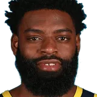

His best final NBA finish was #11 of 30, with the 2018-19 Indiana Pacers. In his 594 games for 4 teams over 10 seasons they went 243–351 (40.9%), −108 games under .500, with an average final finish of 22.3. The biggest one-season rise in his career: the New Orleans Pelicans went from #21 in 2013-14 to #13 in 2014-15.
Jump to: Record by opponent · Season by season · Teammate help
Compare Tyreke Evans with…
Suggested, same era and similar teammate help:


Final NBA finish, season by season
Title Finals Other playoffs Missed playoffs. #1 = champion; the dashed line is last place that season. Each point opens that season's final standings.
All 30 teams ranked in 2018-19, his best finish (#11)Teammate help
 Anthony Davis13.54 seasons
Anthony Davis13.54 seasons Victor Oladipo1.01 season
Victor Oladipo1.01 season DeMarcus Cousins0.21 season
DeMarcus Cousins0.21 season
Seasons with help 0.8 to 1.2 (3): best finish #11 of 30, 2018-19, worst #25 of 30, 2015-16.
Career
Career records (W–L, W − L, with and without) include 2026-27 games through Nov. 22, 2026; season counts and finishes are through 2025-26. Each card opens its board in the same scope. How we count.

Latest completed seasons
Season by season
Newest first; every header sorts. Final NBA finish is the team's rank among all teams that season (#1 = champion) and opens that season's standings. "Without him" uses the team-season window; the span line counts only the games between his first and last game for the team.
| 2018-19 | #11 of 30 | 48–34 58.5% | Lost 1st round 0–4 | 69 of 82 | 41–28 59.4% | 7–6 53.8%span: 7–6, gap +5.6 | +5.6 | |
| 2017-18 | #29 of 30 | 22–60 26.8% | Missed playoffs | 52 of 82 | 19–33 36.5% | 3–27 10.0%span: 0–20, gap +36.5 | +26.5 | |
| 2016-17 | #21 of 30 | 34–48 41.5% | Missed playoffs | 26 of 82 | 13–13 50.0% | 10–21 32.3%span: 2–3, gap +10.0 | +17.7 | |
| 2016-17 | #23 of 30 | 32–50 39.0% | Missed playoffs | 14 of 82 | 4–10 28.6% | 4–7 36.4%span: 3–5, gap −8.9 | −7.8 | |
| 2015-16 | #25 of 30 | 30–52 36.6% | Missed playoffs | 25 of 82 | 11–14 44.0% | 19–38 33.3%span: 1–1, gap −6.0 | +10.7 | |
| 2014-15 | #13 of 30 | 45–37 54.9% | Lost 1st round 0–4 | 79 of 82 | 43–36 54.4% | 2–1 66.7%span: 2–1, gap −12.2 | −12.2 | |
| 2013-14 | #21 of 30 | 34–48 41.5% | Missed playoffs | 72 of 82 | 32–40 44.4% | 2–8 20.0%span: 2–8, gap +24.4 | +24.4 | |
| 2012-13 | #25 of 30 | 28–54 34.1% | Missed playoffs | 65 of 82 | 20–45 30.8% | 8–9 47.1%span: 8–8, gap −19.2 | −16.3 | |
| 2011-12 | #25 of 30 | 22–44 33.3% | Missed playoffs | 63 of 66 | 19–44 30.2% | 3–0 100.0%span: 3–0, gap −69.8 | −69.8 | |
| 2010-11 | #25 of 30 | 24–58 29.3% | Missed playoffs | 57 of 82 | 18–39 31.6% | 6–19 24.0%span: 5–19, gap +10.7 | +7.6 | |
| 2009-10 | #28 of 30 | 25–57 30.5% | Missed playoffs | 72 of 82 | 23–49 31.9% | 2–8 20.0%span: 2–8, gap +11.9 | +11.9 |
On/off, starts and close games
From the lineup data, 1996-97 on. On/off is net points per 100 possessions with him on the floor minus off, a different unit from the win-rate gaps. Started and off the bench are team records in those games; close games are those within 5 points in the last 5 minutes with him on the floor.
| 2018-19 | −2.8 | 13–5 72.2% | 28–23 54.9% | 8–8 50.0% | |
| 2017-18 | +12.9 | 11–21 34.4% | 8–12 40.0% | 12–17 41.4% | |
| 2016-17 | −10.9 | N/A | 13–13 50.0% | 4–5 44.4% | |
| 2016-17 | −5.0 | 2–4 33.3% | 2–6 25.0% | 0–2 0.0% | |
| 2015-16 | −1.2 | 11–14 44.0% | N/A | 6–10 37.5% | |
| 2014-15 | +7.2 | 42–34 55.3% | 1–2 33.3% | 22–22 50.0% | |
| 2013-14 | −6.4 | 11–11 50.0% | 21–29 42.0% | 21–17 55.3% | |
| 2012-13 | +0.5 | 20–41 32.8% | 0–4 0.0% | 12–16 42.9% | |
| 2011-12 | −1.3 | 18–43 29.5% | 1–1 50.0% | 13–17 43.3% | |
| 2010-11 | −3.4 | 15–38 28.3% | 3–1 75.0% | 12–26 31.6% | |
| 2009-10 | −8.7 | 23–49 31.9% | N/A | 14–27 34.1% |
Teammate help by season
Two separate numbers per season, each with every teammate that adds to it. Help this season = Teammates Score points for honors won that season by teammates who shared a game with him. Help coming in = the same teammates' honors from the season before. How help works.
- 2018-19
 Indiana
Victor Oladipo All-Star132 g
Indiana
Victor Oladipo All-Star132 g
Help this season: 1 = 1 Victor Oladipo
More: help coming in and other teammates
Help coming in (teammates' honors the season before): 4.25 = 4.25 Victor Oladipo
Other teammates (no honors that season): Cory Joseph 69 g, Bojan Bogdanovic 68 g, Thaddeus Young 68 g, Doug McDermott 64 g, Darren Collison 63 g, Domantas Sabonis 63 g, Myles Turner 61 g, TJ Leaf 47 g, Kyle O'Quinn 38 g, Aaron Holiday 38 g, Wesley Matthews 17 g, Edmond Sumner 17 g, Alize Johnson 12 g, Davon Reed 6 g and 1 more
- 2017-18
 MemphisHelp this season: 0, no honored teammate
MemphisHelp this season: 0, no honored teammateMore: help coming in
Help coming in (teammates' honors the season before): 1 = 1 Marc Gasol
- 2016-17
 New Orleans
Anthony Davis All-NBA 1stAll-StarAll-Def 2ndAll-Star MVP624 g
New Orleans
Anthony Davis All-NBA 1stAll-StarAll-Def 2ndAll-Star MVP624 g Buddy Hield All-Rookie 1st0.2526 g
Buddy Hield All-Rookie 1st0.2526 g
Help this season: 6.25 = 6 Anthony Davis + 0.25 Buddy Hield
More: help coming in and other teammates
Help coming in (teammates' honors the season before): 1 = 1 Anthony Davis
Other teammates (no honors that season): Jrue Holiday 26 g, Langston Galloway 25 g, Solomon Hill 25 g, E'Twaun Moore 25 g, Dante Cunningham 23 g, Terrence Jones 22 g, Donatas Motiejunas 17 g, Tim Frazier 10 g, Alexis Ajinca 7 g, Omer Asik 4 g, Cheick Diallo 4 g, Reggie Williams 1 g
- 2016-17
 Sacramento
Buddy Hield All-Rookie 1st0.2514 g
Sacramento
Buddy Hield All-Rookie 1st0.2514 g
Help this season: 0.25 = 0.25 Buddy Hield
More: help coming in and other teammates
Help coming in (teammates' honors the season before): 0.125 = 0.125 Willie Cauley-Stein
Other teammates (no honors that season): Skal Labissiere 14 g, Willie Cauley-Stein 14 g, Darren Collison 12 g, Ben McLemore 11 g, Anthony Tolliver 11 g, Langston Galloway 10 g, Georgios Papagiannis 10 g, Ty Lawson 9 g, Kosta Koufos 8 g, Garrett Temple 7 g, Arron Afflalo 7 g
- 2015-16New Orleans
Anthony Davis All-Star123 g
Help this season: 1 = 1 Anthony Davis
More: help coming in and other teammates
Help coming in (teammates' honors the season before): 5.5 = 5.5 Anthony Davis
Other teammates (no honors that season): Norris Cole 25 g, Alonzo Gee 25 g, Omer Asik 25 g, Dante Cunningham 24 g, Jrue Holiday 23 g, Ryan Anderson 23 g, Eric Gordon 22 g, Alexis Ajinca 19 g, Ishmael Smith 10 g, Luke Babbitt 9 g, Toney Douglas 7 g, Kendrick Perkins 5 g, Bryce Dejean-Jones 3 g
- 2014-15New Orleans
Anthony Davis All-NBA 1stAll-StarAll-Def 2nd5.565 g
Help this season: 5.5 = 5.5 Anthony Davis
More: help coming in and other teammates
Help coming in (teammates' honors the season before): 1 = 1 Anthony Davis
Other teammates (no honors that season): Omer Asik 74 g, Alexis Ajinca 66 g, Dante Cunningham 63 g, Luke Babbitt 60 g, Ryan Anderson 60 g, Eric Gordon 59 g, Jimmer Fredette 47 g, Quincy Pondexter 43 g, Jrue Holiday 39 g, Jeff Withey 34 g, Austin Rivers 34 g, Norris Cole 26 g, John Salmons 20 g, Toney Douglas 12 g and 5 more
- 2013-14New Orleans
Anthony Davis All-Star160 g
Help this season: 1 = 1 Anthony Davis
More: help coming in and other teammates
Help coming in (teammates' honors the season before): 1.25 = 1 Jrue Holiday + 0.25 Anthony Davis
Other teammates (no honors that season): Al-Farouq Aminu 70 g, Anthony Morrow 66 g, Brian Roberts 63 g, Austin Rivers 59 g, Eric Gordon 56 g, Greg Stiemsma 49 g, Jeff Withey 48 g, Alexis Ajinca 48 g, Darius Miller 36 g, Jrue Holiday 32 g, Jason Smith 26 g, Luke Babbitt 24 g, Ryan Anderson 20 g, Louis Amundson 16 g and 5 more
- 2012-13SacramentoHelp this season: 0, no honored teammate
More: help coming in
Help coming in (teammates' honors the season before): 0.125 = 0.125 Isaiah Thomas
- 2011-12Sacramento
 Isaiah Thomas All-Rookie 2nd0.12562 g
Isaiah Thomas All-Rookie 2nd0.12562 g
Help this season: 0.125 = 0.125 Isaiah Thomas
More: help coming in and other teammates
Help coming in (teammates' honors the season before): 0.25 = 0.25 DeMarcus Cousins
Other teammates (no honors that season): DeMarcus Cousins 61 g, Jason Thompson 61 g, Jimmer Fredette 58 g, Chuck Hayes 51 g, Donte Greene 50 g, Marcus Thornton 48 g, Francisco Garcia 48 g, John Salmons 44 g, Travis Outlaw 36 g, JJ Hickson 35 g, Terrence Williams 17 g, Hassan Whiteside 16 g, Tyler Honeycutt 13 g
- 2010-11Sacramento
DeMarcus Cousins All-Rookie 1st0.2556 g
Help this season: 0.25 = 0.25 DeMarcus Cousins
More: help coming in and other teammates
Help coming in (teammates' honors the season before): 0.125 = 0.125 Marcus Thornton
Other teammates (no honors that season): Beno Udrih 57 g, Samuel Dalembert 56 g, Jason Thompson 50 g, Omri Casspi 49 g, Donte Greene 49 g, Carl Landry 46 g, Francisco Garcia 41 g, Darnell Jackson 38 g, Pooh Jeter 38 g, Luther Head 23 g, Marcus Thornton 11 g, Antoine Wright 7 g, Jermaine Taylor 6 g
- 2009-10SacramentoHelp this season: 0, no honored teammate
Record against each opponent
- Best regular-season record against one franchise: 13–11 (54.2%) against the Utah Jazz in 24 games.
- Toughest regular-season record against one franchise: 6–21 (22.2%) against the San Antonio Spurs in 27 games.
Regular season, through 2025-26 (2026-27 games not included): 594 games, 243–351, against 30 franchises.
Grouped by franchise (named as today); game lists keep each team's name that season. Filters and the tab are kept in the URL, so a filtered view can be shared.
| Games list | |||||||
|---|---|---|---|---|---|---|---|
| 30 | 13–17 | 43.3% | −4 | N/A | 2009-10 to 2018-19 | ||
| 28 | 9–19 | 32.1% | −10 | N/A | 2009-10 to 2018-19 | ||
| 28 | 13–15 | 46.4% | −2 | N/A | 2009-10 to 2018-19 | ||
| 27 | 6–21 | 22.2% | −15 | N/A | 2009-10 to 2018-19 | ||
| 26 | 6–20 | 23.1% | −14 | N/A | 2009-10 to 2018-19 | ||
| 26 | 6–20 | 23.1% | −14 | N/A | 2009-10 to 2018-19 | ||
| 25 | 9–16 | 36.0% | −7 | N/A | 2009-10 to 2018-19 | ||
| 25 | 10–15 | 40.0% | −5 | N/A | 2009-10 to 2018-19 | ||
| 24 | 8–16 | 33.3% | −8 | 0–1 (0–4 in games) | 2009-10 to 2018-19 | ||
| 24 | 6–18 | 25.0% | −12 | N/A | 2009-10 to 2018-19 | ||
| 24 | 13–11 | 54.2% | +2 | N/A | 2009-10 to 2018-19 | ||
| 23 | 10–13 | 43.5% | −3 | N/A | 2009-10 to 2018-19 | ||
| 22 | 11–11 | 50.0% | 0 | N/A | 2009-10 to 2018-19 | ||
| 19 | 10–9 | 52.6% | +1 | N/A | 2009-10 to 2018-19 | ||
| 18 | 8–10 | 44.4% | −2 | N/A | 2009-10 to 2018-19 | ||
| 17 | 8–9 | 47.1% | −1 | N/A | 2009-10 to 2018-19 | ||
| 17 | 8–9 | 47.1% | −1 | N/A | 2009-10 to 2018-19 | ||
| 17 | 10–7 | 58.8% | +3 | N/A | 2009-10 to 2018-19 | ||
| 16 | 7–9 | 43.8% | −2 | N/A | 2009-10 to 2018-19 | ||
| 16 | 9–7 | 56.2% | +2 | N/A | 2009-10 to 2018-19 | ||
| 16 | 9–7 | 56.2% | +2 | N/A | 2009-10 to 2018-19 | ||
| 16 | 7–9 | 43.8% | −2 | N/A | 2009-10 to 2018-19 | ||
| 16 | 8–8 | 50.0% | 0 | N/A | 2009-10 to 2018-19 | ||
| 14 | 3–11 | 21.4% | −8 | 0–1 (0–4 in games) | 2009-10 to 2018-19 | ||
| 14 | 4–10 | 28.6% | −6 | N/A | 2009-10 to 2017-18 | ||
| 14 | 5–9 | 35.7% | −4 | N/A | 2009-10 to 2018-19 | ||
| 14 | 8–6 | 57.1% | +2 | N/A | 2013-14 to 2018-19 | ||
| 13 | 6–7 | 46.2% | −1 | N/A | 2009-10 to 2018-19 | ||
| 13 | 7–6 | 53.8% | +1 | N/A | 2009-10 to 2018-19 | ||
| 12 | 6–6 | 50.0% | 0 | N/A | 2009-10 to 2018-19 |
Rows add up to his career record in his games. A playoff series counts when he played in it; early round-robin games show as games only. How we count.
Playoffs, with and without him
| 2018-19 | Lost in the first round 0–4 to | #11 of 30 | 4 of 4 | 0–4 0.0% | |
| 2014-15 | Lost in the first round 0–4 to | #13 of 30 | 4 of 4 | 0–4 0.0% |
He played every playoff game for these teams, so there is no "without him" record.
Arrival and departure
Team wins per 82 games the season before he arrived vs his first season there, and his last season vs the season after he left. He leaves a team only when his next season with games is for another team (or he never plays again); whole seasons he missed and came back from are one "Missed" row with the team's record without him. Per 82 so short seasons compare fairly. These are team records, not a measure of what he did.
| Left | after 2018-19 | 2018-19: 48–34 48.0 per 82 | 2019-20: 45–28 50.5 per 82 without him | +2.5 wins | |
| Arrived | 2018-19 | 2017-18: 48–34 48.0 per 82 | 2018-19: 48–34 48.0 per 82 | +0.0 wins | |
| Left | after 2017-18 | 2017-18: 22–60 22.0 per 82 | 2018-19: 33–49 33.0 per 82 without him | +11.0 wins | |
| Arrived | 2017-18 | 2016-17: 43–39 43.0 per 82 | 2017-18: 22–60 22.0 per 82 | −21.0 wins | |
| Left | after 2016-17 | 2016-17: 34–48 34.0 per 82 | 2017-18: 48–34 48.0 per 82 without him | +14.0 wins | |
| Left | after 2016-17 | 2016-17: 32–50 32.0 per 82 | 2017-18: 27–55 27.0 per 82 without him | −5.0 wins | |
| Arrived | 2016-17 | 2015-16: 33–49 33.0 per 82 | 2016-17: 32–50 32.0 per 82 | −1.0 wins | |
| Arrived | 2013-14 | 2012-13: 27–55 27.0 per 82 | 2013-14: 34–48 34.0 per 82 | +7.0 wins | |
| Left | after 2012-13 | 2012-13: 28–54 28.0 per 82 | 2013-14: 28–54 28.0 per 82 without him | +0.0 wins | |
| Debut | 2009-10 | 2008-09: 17–65 17.0 per 82 | 2009-10: 25–57 25.0 per 82 | +8.0 wins |
Seasons split between teams
Each team's record before his first game for it, inside his window (games with and without him) and after his last game, in the seasons he played for two or more teams.
| 2016-17 | Dec. 15, 2016 to Feb. 15, 2017 | N/A | 23–34 40.4% | 11–14 44.0% | 26 | |
| 2016-17 | Feb. 23, 2017 to April 7, 2017 | 24–33 42.1% | 8–17 32.0% | N/A | 14 |
Best duos
Team record in regular-season games both played, top 10 by win %, at least 50 games together.
 Cory Joseph
41–28 59.4%
Cory Joseph
41–28 59.4% Myles Turner
36–25 59.0%
Myles Turner
36–25 59.0% Thaddeus Young
40–28 58.8%
Thaddeus Young
40–28 58.8% Bojan Bogdanovic
40–28 58.8%
Bojan Bogdanovic
40–28 58.8% Domantas Sabonis
37–26 58.7%
Domantas Sabonis
37–26 58.7% Doug McDermott
36–28 56.2%
Doug McDermott
36–28 56.2% Norris Cole
28–23 54.9%
Norris Cole
28–23 54.9% Darren Collison
40–35 53.3%
Darren Collison
40–35 53.3% Ryan Anderson
54–49 52.4%
Ryan Anderson
54–49 52.4% Omer Asik
54–49 52.4%
Omer Asik
54–49 52.4%
With and without his teammates
His 12 teammates with the most regular-season games together. "Together" is the team's record in the games both played for it; "Without him" is the team's record in the games Tyreke Evans played for that team while the teammate was on it (between the teammate's first and last game for the team, the appearance span) and the teammate did not play. Fewer than 20 games without him: no gap. Games through Nov. 22, 2026. How we count.
 Jason ThompsonSacramento 2009-10 to 2012-13
Jason ThompsonSacramento 2009-10 to 2012-13- Together
- 77–164 32.0%
- Without him
- 3–13 18.8%
- Gap
- Too few games without him
- DeMarcus CousinsSacramento 2010-11 to 2012-13
- Together
- 53–124 29.9%
- Without him
- 4–4 50.0%
- Gap
- Too few games without him
- Anthony DavisNew Orleans 2013-14 to 2016-17
- Together
- 86–86 50.0%
- Without him
- 11–15 42.3%
- Gap
- 7.7 points lower
- Donte GreeneSacramento 2009-10 to 2011-12
- Together
- 49–116 29.7%
- Without him
- 11–16 40.7%
- Gap
- 11.0 points higher
 Jimmer FredetteSacramento 2011-12 to 2012-13; New Orleans 2014-15
Jimmer FredetteSacramento 2011-12 to 2012-13; New Orleans 2014-15- Together
- 60–98 38.0%
- Without him
- 20–26 43.5%
- Gap
- 5.5 points higher
- Alexis AjincaNew Orleans 2013-14 to 2016-17
- Together
- 72–68 51.4%
- Without him
- 16–24 40.0%
- Gap
- 11.4 points lower
 Eric GordonNew Orleans 2013-14 to 2015-16
Eric GordonNew Orleans 2013-14 to 2015-16- Together
- 67–70 48.9%
- Without him
- 13–13 50.0%
- Gap
- 1.1 points higher
- Francisco GarciaSacramento 2009-10 to 2012-13
- Together
- 41–95 30.1%
- Without him
- 12–32 27.3%
- Gap
- 2.9 points lower
 Beno UdrihSacramento 2009-10 to 2010-11
Beno UdrihSacramento 2009-10 to 2010-11- Together
- 40–86 31.7%
- Without him
- 1–1 50.0%
- Gap
- Too few games without him
- Isaiah ThomasSacramento 2011-12 to 2012-13
- Together
- 38–86 30.6%
- Without him
- 1–3 25.0%
- Gap
- Too few games without him
 John SalmonsSacramento 2011-12 to 2012-13; New Orleans 2014-15
John SalmonsSacramento 2011-12 to 2012-13; New Orleans 2014-15- Together
- 40–83 32.5%
- Without him
- 18–13 58.1%
- Gap
- 25.5 points higher
 Jrue HolidayNew Orleans 2013-14 to 2016-17
Jrue HolidayNew Orleans 2013-14 to 2016-17- Together
- 58–62 48.3%
- Without him
- 24–18 57.1%
- Gap
- 8.8 points higher